The feel
Liminal spaces are in-between places that exist to be travelled through, not lingered in: stairwells, corridors, hotels, waiting rooms.1,2 Seen empty and out of their usual context, they turn eerie, and people often feel they have been there before without knowing why.3 Jared Pike's Dream Pools draw reactions from "I've been here before in my dreams" to "this is horrifying", and he says they are supposed to be a little of all of those.4
The unease comes from the familiar going slightly wrong: psychologists Alexander Diel and Michael Lewis found that departures from a building's familiar pattern are what make a place uncanny.5 Pike plays on the same gap. A pool is normally busy and well lit, so one seen alone with dark corners feels unsettling.6 There are no monsters in the world he imagines,7 and the result is neither alienating enough to be horror nor ordinary enough to be reassuring.8
- empty
- clean
- humming
- unattended
- in between
- after hours
Where it comes from
The word comes from anthropology: in 1909 Arnold van Gennep split rites of passage into preliminal, liminal and postliminal stages, after the Latin limen, a threshold.9 The internet aesthetic took off after a photo of an empty room with yellow walls and carpet, the Backrooms, was posted on 4chan in May 2019,3,10 and grew again when the 2020 lockdowns filled feeds with pictures of empty streets and public places.3 Jared Pike posted his first Dream Pool at the end of 2020, and his pools were taken into Backrooms lore as the Poolrooms.6 Games followed: The Exit 8 (2023) loops one near-empty metro passage,8 and POOLS (2024) names the Backrooms Poolrooms, Pike and Anemoiapolis: Chapter 1 (2023) among its influences.11
Core elements
Transitional spaces
Stairwells, corridors, hotels, waiting rooms and car parks: places that exist to be travelled through rather than stayed in.1,2 Because nobody really looks at them, a small change is enough to make them strange.12
Traces of absent people
No people are visible, though the place is plainly meant for them, and the emptiness leaves the viewer's imagination to fill the gap.12,3 The lights still work and traces remain, such as scuffs on the floor or objects someone put down: signs that people were here, but not whether they still are.10,12
Small distortions of ordinary places
Kakeru Taira adds a slight distortion to the kind of space people normally overlook.12 The Exit 8 makes a game of it: the same subway passage repeats, and the player must turn back whenever something is out of place.13
Warm light and unlit corners
Pike's formula is warm sunlight set against unlit corners.4 The light source is unclear and shadows linger at the edges, because a pool seen alone with dark corners is unsettling.6
Missing or useless signage
Liminal images drop the signs that normally tell you how to use a place, so you are left to find your way alone.10 The Backrooms turns this around, with identical rooms and signs that are erratic or useless.10
Unease with no danger
POOLS leaves out monsters, puzzles, dialogue and music, so it is only about feeling weird and isolated.14,11 The Exit 8 keeps its anomalies "borderline horror" and never kills the player.13
How to do it
Start with the camera
Pike begins every scene with the camera: usually a 24 or 35 mm lens at eye or waist height, set where someone could realistically be taking a photograph. He then composes the room around it.7
Block it out in plain shapes
Lay the space out by extruding simple planes, cubes and cylinders.2 Judge it in a grey view before adding any detail, and scrap it if it doesn't work there.7 The initial scene takes Pike about an hour, and test renders several hours more.2
Build only what the camera sees
Anything out of shot can be nonsense, and Pike's scenes simply end beyond the frame.7 Keep a corner the viewer can't see round: what is really there is only more tile, and their imagination will do better.7
Light part of the room
Move the light source next.2 Let warm sunlight fall across part of the room and make a dark area on purpose.4,7 Pike calls it a juggling act between where light hits, where it bounces and where it is kept out.6
Finish the surfaces last
Place the water, apply textures and bevel the edges last, so the room reads as real.2 Pike renders with a renderer that excels at water and refraction, then processes the images.6,2 Stop short of ultra-realism: surfaces that are too clean and perfect make it surreal.7
Base game spaces on real places
For The Exit 8, Kotake Create built the subway passage from authentic assets based on real examples, seen through a wide-angle lens with camera shake.13 Taira also uses camera shake, and places objects so their lines converge on the centre of the frame.12
Leave out the music
Leave out the score. POOLS has no background music or dialogue, only sound design built from its environments,11 and its makers say the point is to look around and listen.14
Cheat sheet
Do
Avoid
- Monsters and chases. Pike imagines no monsters in his pools,7 and POOLS leaves out hostile creatures altogether.14
- Ruin and grime. Some wear is fine, but the place should still look as if it works,10 and Pike keeps his pools cleaner than any real one.7
- People in the shot. In Diel and Lewis's tests, people made a distorted public interior less uncanny.5
- Explaining the place. Pike leaves the story for viewers to fill in,7 and liminal images work by letting people bring their own memories.1
Tools and tutorials
- How to make the Pool Rooms using Blender
A complete workflow in 24 minutes.
- Blender poolroom tutorial in 14 minutes
A shorter route to the same room.
- Liminal Spaces: Pool Rooms in Unreal Engine 5
Nearly two hours of environment design in a game engine.
- LuxCoreRender
The Blender add-on Pike renders his water and refraction with.6
Palette
The first four are from Jared Pike's Dream Pools, then POOLS, The Exit 8 and Superliminal. Keep to the pale end and let one saturated colour turn up rarely.
Feel the vibe
Listen
Ambience from the makers of POOLS, a game that uses sound design in place of music.11
YouTubeOpens Surround (1986), made for Misawa Home's houses to sit among footsteps and the hum of an air conditioner.15
YouTubeFrom Music for Nine Post Cards (1982), a defining record of kankyō ongaku, Japanese environmental music.15
YouTubeGentle, a little off, and playing to nobody. Try it under an empty corridor.
YouTube
More references
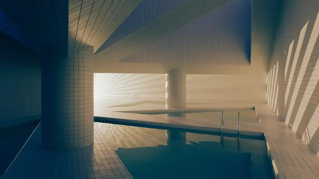
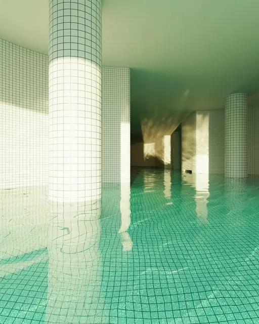
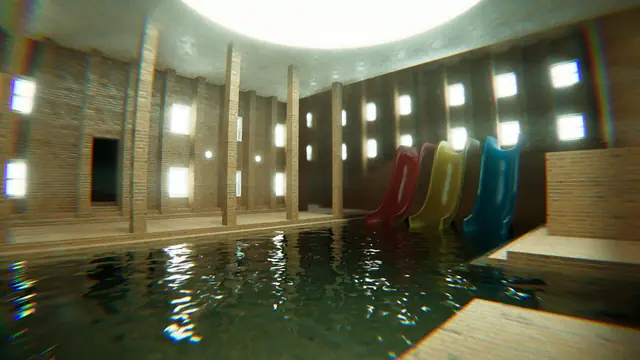
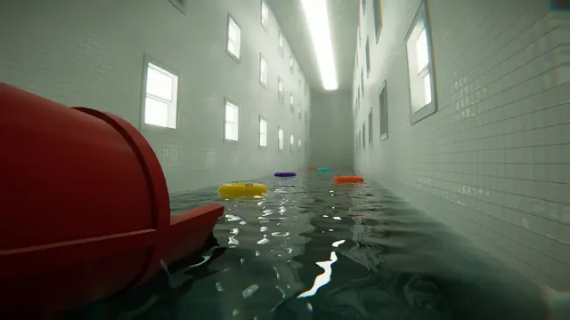
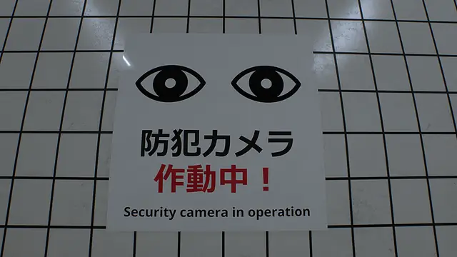
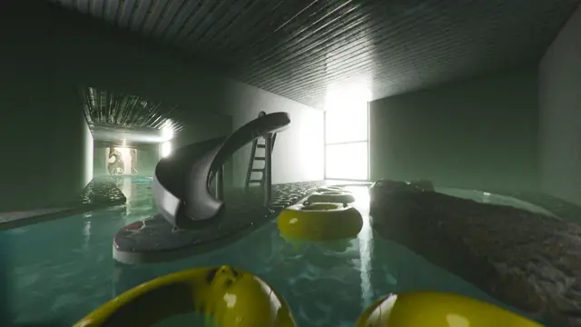
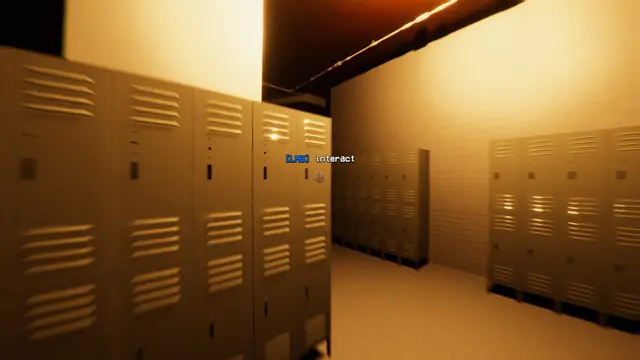
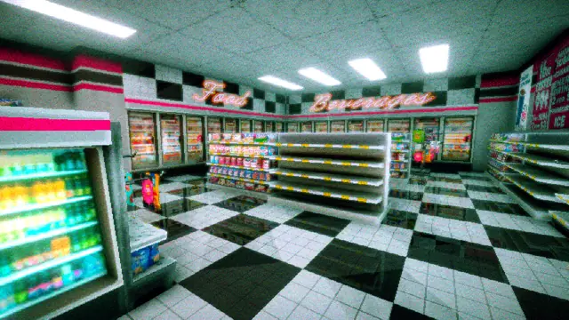
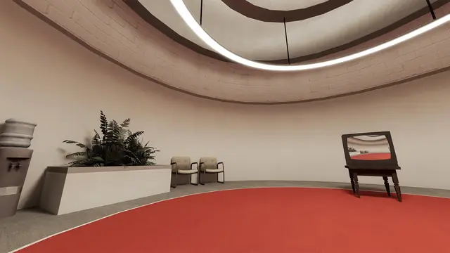
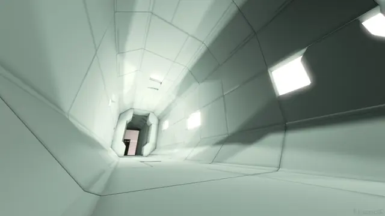
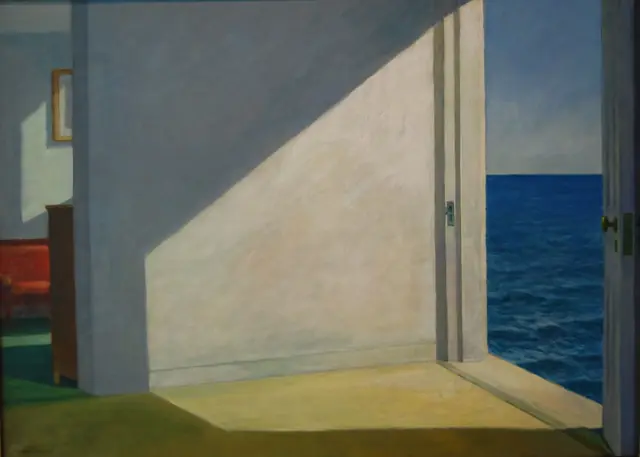
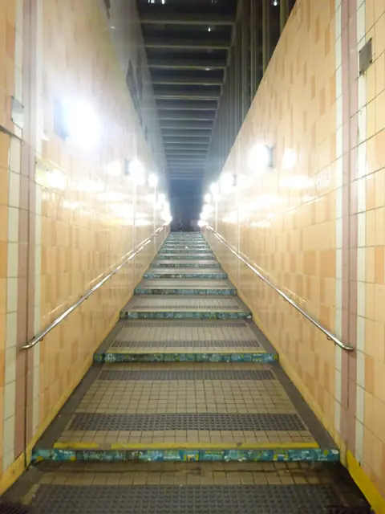
Games
- Superliminal
Study how little its clean hotel corridors and offices need to feel unreal.
- The Stanley Parable: Ultra Deluxe
Study how plain its empty office corridors stay while the narrator does the talking.
- Anemoiapolis: Chapter 1
Andrew Quist's underground complex of pools, water parks and malls, brightly lit and empty.16,14
- Interior Worlds
Study how ordinary shops and rooms read once nobody is in them.
- The Exit 8
One looping passage and one rule: turn back if anything is out of place.13
- POOLS
No monsters, dialogue or music, and the first two chapters keep to the classic Poolrooms look.11
Film, art and more
- Jared Pike: Dream Pools
The renders that the Backrooms took in as the Poolrooms.6
- Liminal space (aesthetic)
History and the research behind the feeling.
- Rooms by the Sea
Edward Hopper's empty room with the sea at the door, a visual parallel. Liminal forums are fond of Hopper's paintings.1
- The Shining
The Exit 8's anomalies drew on it,13 and Kakeru Taira names Kubrick's sense of space as an influence.12
- Skinamarink
Watch how long it holds on dark, empty corners of an ordinary house.
- Exit 8
Genki Kawamura's film of the game.8
Sources
- 1The Pleasant Head Trip of Liminal Spaces
- 2Dreaming of Digital Pools
- 3Liminal space (aesthetic)
- 4diving into 3D artist jared pike’s pool dreamscapes and imaginary liminal interiors
- 5Structural deviations drive an uncanny valley of physical places
- 6The dreamlike images of pools you’ve been seeing on the internet are made by a Northeastern grad
- 7Interview: Artist Jared Pike on Dream Pools and the Allure of Liminal Spaces
- 8From creepypasta to Hollywood: Everything you need to know about 'Backrooms' and liminal horror
- 9Rite of passage
- 10Why Are Liminal Spaces Eerie? The Case of The Backrooms
- 11POOLS Out Now on Steam
- 12Where Silence Speaks: Kakeru Taira on Transforming Everyday Spaces into Liminal Experiences
- 13The Exit 8 dev reveals how he made a top-selling Steam game in UE5 in 9 months
- 14Games industry should be 'less cautious,' says maker of experimental game about exploring a swimming pool dimension
- 15Everyday Ambient: The Legacy of Hiroshi Yoshimura’s “Surround”
- 16Anemoiapolis Makes a Big Splash in Liminal Horror